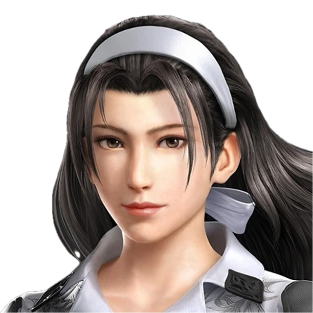
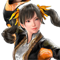

P01Valmentajaprofiili
Mauste
Jun · .mauste

Jun Kazama (main)
Olen valmis myös valmentamaan ja syventymään valmennettavan mukana seuraaviin hahmoihin:
Dragunov
Ling Xiaoyu
Kunimitsu
Miary Zo
Lili
Tekken 7, 225 tuntia.
Tekken 8, ~1100 tuntia
Nuoruudessa pelannut myös noita vanhempia Tekkeneitä, huomattavasti vähemmän tosissaan.
Ajoittain käyn verkossa järjestettävissä viikkoturnauksissa, niistä ei ole palkintoja tullut.
Jun Kazama. Olen ehdottomasti hahmospesialisti ja tunnen oman hahmoni huomattavasti paremmin kuin muut hahmot. Vaikka olen valmis valmentamaan muutamia muitakin hahmoja, tämän hahmon kanssa minusta on ehdottomasti eniten hyötyä.
Muistan edelleen miten vaikea peli Tekken on opetella, ja miten haastavaa pelin aloittaminen on. Alkuun opetellaan ihan pelin perusteita. Kun perusteet ovat hallussa, katsotaan yhdessä pelaajan kanssa että minkälainen opettelu maistuu parhaiten ja ruvetaan siitä tekemään mieluista ohjelmaa. Voidaan opetella monimutkaisempia asioita, tai katsoa että mitkä napit ovat hauskoja käyttää tai hienon näköisiä ja niille etsiä sitten käyttötarkoitusta.
Toivoisin valmennettavaltani lievää oma-aloitteisuutta. Pientä omakeskeistä opiskelua ja kysymyksiä. Voin mielelläni katsoa replayt matseista jotka jäivät mietityttämään, jos vaikka onlinessa ollut tukalia tilanteita ja palata siihen viestillä, tai seuraavassa valmennussessiossa.
Lähdetään hyvillä mielellä opettelemaan ja pitämään hauskaa, mutta toivon että kilpailijalla on pieni voitonnälkä sekä sitä halua opetella.
Olen hyvin vaihtelevasti saatavilla, parhaiten yleensä viikolla, tai sunnuntaisin ennen kello 20:00. Aikatauluni on kuitenki yleisesti ottaen hyvin joustava. Minun on helppo sopia esimerkiksi aina valmennussession lopussa seuraavalle viikolle uutta sessiota - tai monesti voin hypätä välittömästi linjalle jos on joku palava kysymys mielessä, jonka haluaa käydä nopeasti läpi.
Ryöstäjä, riskinottaja. Saan ehdottomasti suurinta mielihyvää aina odottamattomista teoista ja liikkeistä, joilla ryöstän erän itselleni.
Riskien ja ryöstöjen tarvitsee kuitenkin olla harkittuja. Jokaiseen väliin ei voi painaa paniikkinappeja, joten perusteet on myöskin pelistä hallussa ja nämä tilaisuudet aina valitaan tarkasti.
Nautin myös erityisesti erilaisista setupeista, joihin vastustajan voi nallittaa, sekä erityisesti pelin eri tasoista ja siitä, miten vastustajan tekemisiä voi alkaa lukemaan ja ennakoimaan.
Ota yhteyttä Discordissa
Mauste / .mauste